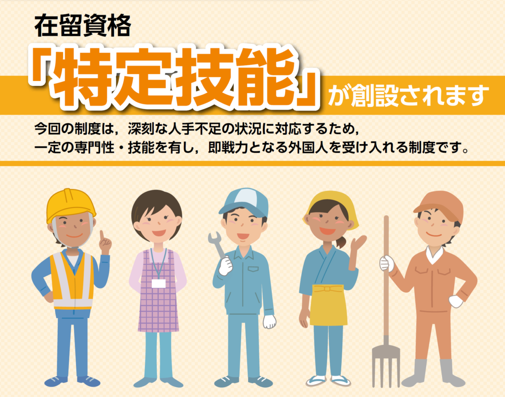

Apa Itu Tokutei Ginou?
Masih bingung apa perbedaan Magang dan Tokutei Ginou?

Tentang Kami
PT. Watari berdiri Maret 2013, sebagai salah satu perusahaan dalam Minori Group yang didirikan dengan memiliki misi yaitu dalam proses “Matching” para Pemagang Minori yang telah kembali ke Indonesia, untuk dapat bekerja dan berkontribusi di Indonesia.